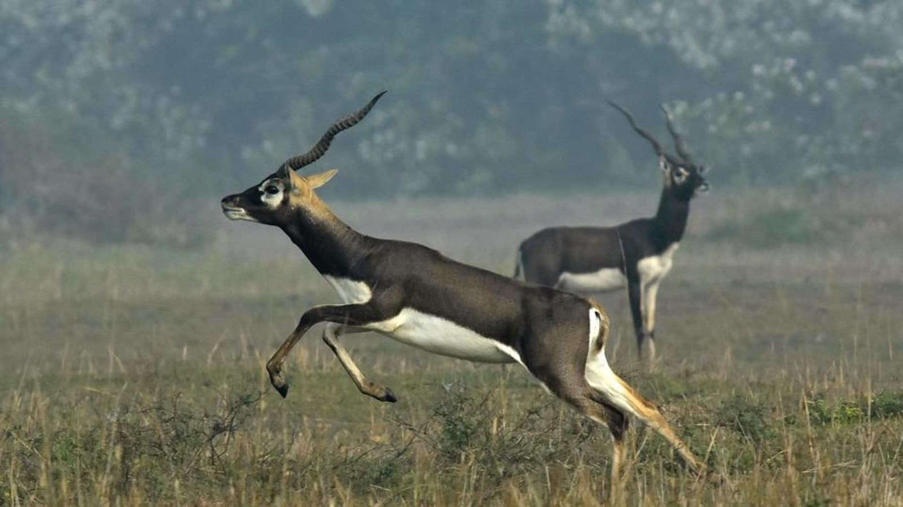

The blackbuck (Antilope cervicapra), also known as the Indian antelope, is an antelope native to India and Nepal. It inhabits grassy plains and lightly forested areas with perennial water sources. It stands up to 74 to 84 cm (29 to 33 in) high at the shoulder. Males weigh 20–57 kg (44–126 lb), with an average of 38 kg (84 lb). Females are lighter, weighing 20–33 kg (44–73 lb) or 27 kg (60 lb) on average. Males have 35–75 cm (14–30 in) long, ringed horns, though females may develop horns as well. The white fur on the chin and around the eyes is in sharp contrast with the black stripes on the face. The coats of males show a two-tone colouration; while the upper parts and outsides of the legs are dark brown to black, the underparts and the insides of the legs are white. Females and juveniles are yellowish fawn to tan. The blackbuck is the sole living member of the genus Antilope and was scientifically described by Carl Linnaeus in 1758. Two subspecies are recognized. The blackbuck is active mainly during the day. It forms three type of small groups, female, male, and bachelor herds. Males often adopt lekking as a strategy to garner females for mating. While other males are not allowed into these territories, females often visit these places to forage. The male can thus attempt mating with her. The blackbuck is a herbivore and grazes on low grasses, occasionally browsing as well. Females become sexually mature at the age of eight months, but mate no earlier than two years of age. Males mature later, at 1.5 years. Mating takes place throughout the year. Gestation is typically six months long, after which a single calf is born. The lifespan is typically 10 to 15 years.
The nilgai (Boselaphus tragocamelus) (/ˈnilˌɡaɪ/, literally meaning "blue cow") is the largest Asian antelope and is ubiquitous across the northern Indian subcontinent. It is the sole member of the genus Boselaphus and was described by Peter Simon Pallas in 1766. The nilgai stands 1–1.5 m (3.3–4.9 ft) at the shoulder; males weigh 109–288 kg (240–635 lb), and the lighter females 100–213 kg (220–470 lb). A sturdy thin-legged antelope, the nilgai is characterised by a sloping back, a deep neck with a white patch on the throat, a short crest of hair along the neck terminating in a tuft, and white facial spots. A column of pendant coarse hair hangs from the dewlap ridge below the white patch. Sexual dimorphism is prominent – while females and juveniles are orange to tawny, adult males have a bluish-grey coat. Only males possess horns, 15–24 cm (5.9–9.4 in) long. The nilgai is diurnal (active mainly during the day). The animals band together in three distinct kinds of groups: one or two females with young calves, three to six adult and yearling females with calves, and all-male groups with two to 18 members. Typically tame, the nilgai may appear timid and cautious if harassed or alarmed; it flees up to 300 m (980 ft), or even 700 m (2,300 ft), galloping away from the source of danger. Herbivores, nilgai prefer grasses and herbs, though they commonly eat woody plants in the dry tropical forests of India. Females become sexually mature by two years, while males do not become sexually active until four or five years old. The time of the year when mating takes place varies geographically, but a peak breeding season lasting three to four months can be observed at most places. Gestation lasts eight to nine months, following which a single calf (sometimes twins or even triplets) is born. As typical of several bovid species, nilgai calves stay hidden for the first few weeks of their lives. The lifespan of the nilgai is around ten years.